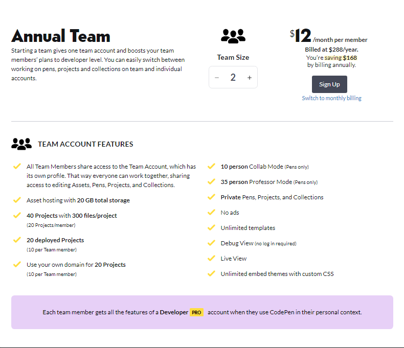
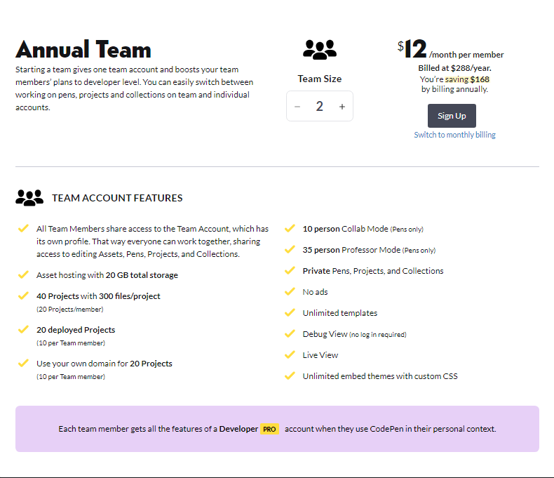

Unlimited Privacy
With CodePen PRO, you get unlimited Private Pens, Projects, and
Collections.
Privacy for Showcasing Work
Use Private Pens as Drafts
Pens are public by default on CodePen, and all public Pens are indexed for public search, findable on your profile, and open source licensed.
Private Pens are none of those things. No one can see them unless you decide to share them. They aren’t shown in search, either through CodePen search or outside search engines. They can’t be seen on your profile. No license is applied to them.
One way to use Private Pens is to keep all your Pens private while you are working on them, then toggle them over to Public when you are ready.
- Any Pen can be Private
- Any Project can be Private
- Any Collection can be Private

No Annoying Passwords
Nobody can guess a URL like the URLs to your private work on CodePen. They are totally unfindable until you share that URL. That’s pretty handy because anybody who you share that URL with can see it. They don’t have to be logged in, have a password, or even have an account
Private Collections
Send Private Collections to Clients
One popular reason to make Private Pens on CodePen is for in-progress concepts for client work. You can make Private Collections on CodePen, and you can put Private Pens in Private Collections. We’ve had lots of people tell us this is perfect for working with clients. You send them a link to the Private Collection and they can see everything related to a project in one place.

How Private is Private?
This is how private content works on CodePen:
- Private content gets an unguessable URL. Seriously. The URL’s are so long and so obscure that even a computer can’t guess them.
- Private content is not findable through public CodePen search. While logged in, you can still search your own content to find your own private content, however.
- We tell third-party search engines not to index private content. We use every method they share for telling search engines like Google and Yahoo to not index private content. They shouldn’t be able to find links to your private content anyway, but this is just in case you share it and these search engines find those shared links.
- Private content is not findable on CodePen except by you on your your own profile while logged in. Nobody else can browse around CodePen and find anything private that you’d made. Not on your profile or anywhere else.
- There are no passwords involved.
- There is no user authentication involved.
What privacy isn’t on CodePen
This isn’t enterprise-level mega-encrypted super-security. It’s very secret URL’s for your content that are unfindable until you choose to share them. Simple and effective!

Privacy for Teams
Team Members Can Work Together Privately
People who are on the same Team can work on private content together. As long as you are logged in and in the Team Context, you can see all the Team’s private content right on the Team Profile. For example, Rachel could start a Private Pen. Tim could update it. Alex could add a title and explanation. Marie could add it to a Private Collection. In the Team Context, everybody has access to all the Team content, private or otherwise.
Choose a Plan
What do you get for being PRO? A lot!
 
